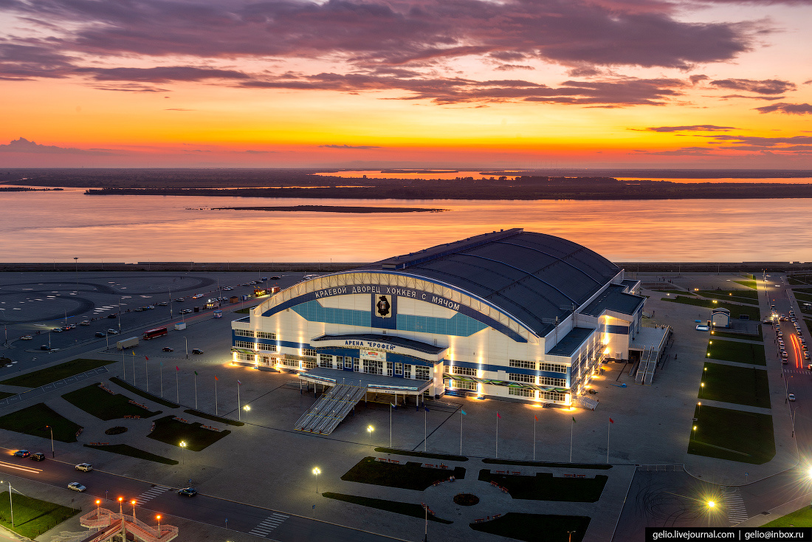

Арена Ерофей - спортивный комплекс в Хабаровске для игр по хоккею с мячом. Открыт в 2013 году и назван в честь землепроходца Ерофея Павловича Хабарова. За такое название проголосовало большинство горожан в объявленном властями конкурсе, проводимом в феврале 2013 года.
Четвертый в России крытый стадион, на котором можно проводить матчи по хоккею с мячом и второй, построенный специально для хоккея с мячом. Самый крупный и вместительный крытый стадион для хоккея с мячом в мире. Помимо хоккея с мячом, стадион рассчитан на соревнования по фигурному катанию, конькобежному спорту, кёрлингу, а также по футболу – предусмотрена возможность укладки поверх льда искусственного травяного газона. Одновременно на арене могут заниматься спортом до 250 человек. На парковке арены проходят соревнования по дрифту.
Решение о возведении арены было принято губернатором Хабаровского края осенью 2007 года. Изначально строительство планировалось на участке, прилегающем к улице Юности в районе Первого микрорайона, но позже было перенесено на набережную реки Амур, прилегающую к улице Павла Морозова.
Строительные работы начались в декабре 2008 года. Согласно графику, арена должна была быть введена в строй в четвёртом квартале 2010 года, но из-за экономического кризиса работы были приостановлены и возобновились только в 2011 году.
Официальное открытие арены состоялось 18 октября 2013 года. Название «Ерофей» арена получила в результате общегородского конкурса, победителем стал вариант названия, предложенный хабаровчанином Иваном Волошиным.